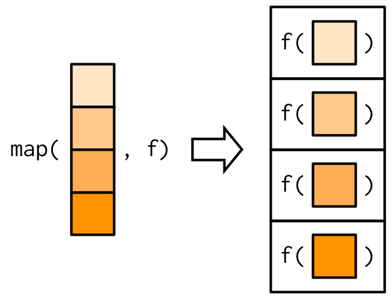

Purrr, at the core, just takes something (elements of a vector, columns of a data frame, vectors in a list), and performs a specified function. The syntax is somewhat straightforward when you play around with it. For us statisticians, it is perhaps somewhat unnecessary if you are already know how to use for loops, apply’s, or across, but I wanted to present what I know on it since it feels more straightforward.
There are a handful of options to iterate a function across lists in R
map
takes a vector and function, outputs function applied to each element in a list
map can take non vector inputs (e.g. a data frame or tibble), but the output will be a list
subvariants of map_lgl, map_int, map_dbl, map_chr
modify
modify outputs the same data type as the input
So, input a data frame, get a data frame out (as opposed to a list with map)
map2
Takes two inputs and a function
So, if you have two lists and want to apply the same function to both in tandem
walk
[[1]]
[1] 3
[[2]]
[1] 6
[[3]]
[1] 9 MinTemp MaxTemp Rainfall Evaporation Sunshine
FALSE FALSE FALSE FALSE FALSE
WindGustDir WindGustSpeed WindDir9am WindDir3pm WindSpeed9am
TRUE FALSE TRUE TRUE FALSE
WindSpeed3pm Humidity9am Humidity3pm Pressure9am Pressure3pm
FALSE TRUE TRUE FALSE FALSE
Cloud9am Cloud3pm Temp9am Temp3pm RainToday
TRUE TRUE FALSE FALSE TRUE
RISK_MM RainTomorrow
FALSE TRUE MinTemp MaxTemp Rainfall Evaporation Sunshine
180 187 47 55 115
WindGustDir WindGustSpeed WindDir9am WindDir3pm WindSpeed9am
17 36 17 17 23
WindSpeed3pm Humidity9am Humidity3pm Pressure9am Pressure3pm
26 60 74 190 193
Cloud9am Cloud3pm Temp9am Temp3pm RainToday
9 9 178 200 2
RISK_MM RainTomorrow
47 2 mpg cyl disp hp drat wt qsec
20.090625 6.187500 230.721875 146.687500 3.596563 3.217250 17.848750
vs am gear carb
0.437500 0.406250 3.687500 2.812500 variables <- setdiff(names(weather2), c("row_id", "level"))
modelsFor <- list()
for (var in variables) {
modelsFor[[var]] = glm(as.formula(paste0("RainTomorrow ~ ", var)),
data = weather2,
family = "binomial")
}
modelsLapply <- lapply(variables,
function(x) glm(as.formula(paste0("RainTomorrow ~", x)),
data = weather2,
family = "binomial")
)modelsPurrr <- weather2 %>%
select(-RainTomorrow) %>%
map(~ glm(RainTomorrow ~ .x, family = "binomial", data = weather2) )
modelsPurrr %>%
map(tidy) %>%
head(5)$MinTemp
# A tibble: 2 x 5
term estimate std.error statistic p.value
<chr> <dbl> <dbl> <dbl> <dbl>
1 (Intercept) -2.43 0.278 -8.73 2.60e-18
2 .x 0.108 0.0250 4.31 1.61e- 5
$MaxTemp
# A tibble: 2 x 5
term estimate std.error statistic p.value
<chr> <dbl> <dbl> <dbl> <dbl>
1 (Intercept) -1.91 0.446 -4.28 0.0000189
2 .x 0.0189 0.0201 0.940 0.347
$Rainfall
# A tibble: 2 x 5
term estimate std.error statistic p.value
<chr> <dbl> <dbl> <dbl> <dbl>
1 (Intercept) -1.62 0.147 -11.0 2.60e-28
2 .x 0.0632 0.0269 2.35 1.89e- 2
$Evaporation
# A tibble: 2 x 5
term estimate std.error statistic p.value
<chr> <dbl> <dbl> <dbl> <dbl>
1 (Intercept) -1.92 0.278 -6.89 5.75e-12
2 .x 0.0850 0.0494 1.72 8.50e- 2
$Sunshine
# A tibble: 2 x 5
term estimate std.error statistic p.value
<chr> <dbl> <dbl> <dbl> <dbl>
1 (Intercept) 0.414 0.292 1.42 1.57e- 1
2 .x -0.281 0.0415 -6.76 1.38e-11weather2 %>%
select(-RainTomorrow) %>%
map( ~ glm(RainTomorrow ~ .x, family = "binomial", data = weather2) ) %>%
map(broom::tidy) %>%
map(filter, term != "(Intercept)") %>%
map(select, -term) %>%
bind_rows( .id = "term") %>%
head(3)# A tibble: 3 x 5
term estimate std.error statistic p.value
<chr> <dbl> <dbl> <dbl> <dbl>
1 MinTemp 0.108 0.0250 4.31 0.0000161
2 MaxTemp 0.0189 0.0201 0.940 0.347
3 Rainfall 0.0632 0.0269 2.35 0.0189 colnames(weather2) %>%
setdiff("RainTomorrow") %>%
rlang::syms() %>%
map( ~rlang::expr(glm(RainTomorrow ~ !!.x, data=weather2,
family = "binomial")) ) %>%
map(eval.parent) %>%
map(broom::tidy) %>%
bind_rows() %>%
filter(term != "(Intercept)") %>%
tail(3)# A tibble: 3 x 5
term estimate std.error statistic p.value
<chr> <dbl> <dbl> <dbl> <dbl>
1 Temp3pm 0.00434 0.0204 0.212 0.832
2 RainTodayYes 0.972 0.310 3.14 0.00170
3 RISK_MM 170. 11557. 0.0147 0.988 Something that is very nice in purrr is the reduce function: sometimes you wanna do multiple joins all at once, but dplyr requires nested joins which can be difficult to write. Reduce is a neater way of doing multiple joins at once.
x <- data.frame(i = c("a","b","c"), j = 1:3, stringsAsFactors=FALSE)
y <- data.frame(i = c("b","c","d"), k = 4:6, stringsAsFactors=FALSE)
z <- data.frame(i = c("c","d","a"), l = 7:9, stringsAsFactors=FALSE)
reduce(list(x,y,z), left_join, by = "i") i j k l
1 a 1 NA 9
2 b 2 4 NA
3 c 3 5 7